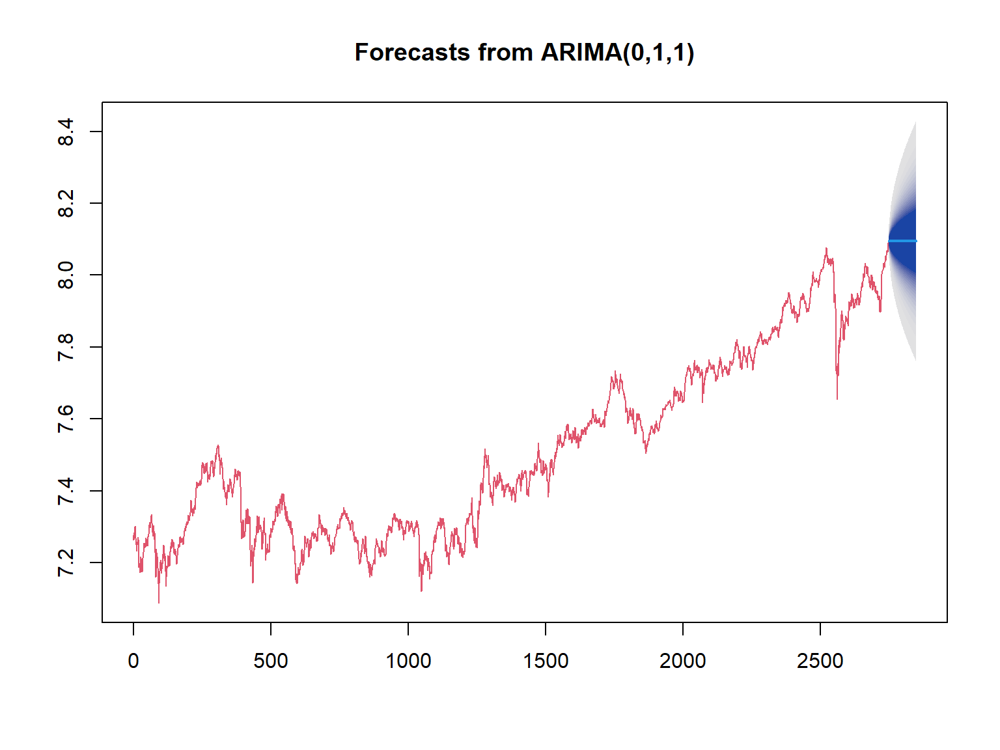

Индекс ММВБ
library(quantmod)
#MICEX <- rusquant::getSymbols.Finam('MICEX',from = "2001-01-01") # ммвб
chartSeries(MICEX, theme = 'white')в логарифмах
для лог-доходностей

Салихов Марсель (marcel.salikhov@gmail.com)
2020-12-14
У вас небольшой бизнес - вы открыли кафейне на вынос напротив здания ВШЭ. Каждый день вам необходимо сделать заказ в пекарне, которая привезет вас с утра круассан на следующий день (\(t+1\)).
Какой подход вы можете использовать?
К примеру, вы можете использовать следующий подход. Базово вы заказываете 20 круассанов, а также учитываете информацию о том, сколько у вас осталось или не хватило круассанов в предыдущий день.
Пример в Excel.
Если серия временного ряда \({x_t}\) является моделью скользящего среднего порядка \(q\) (MA(q)), то это означает, что
\[ x_t = \beta_0 + \beta_1 \epsilon_{t-1} + \ldots + \beta_q \epsilon_{t-q} + \epsilon_t \] где \({w_t}\) – это белый шум с \(E(w_t)=0\) и дисперсией \(\sigma^2\).
Попробуем симулировать MA(1) c параметром \(\beta = 0.6\). То есть мы симулируем модель вида:
\[ x_t = w_t + 0.6 w_{t-1} \]
set.seed(123)
x <- w <- rnorm(100)
for (t in 2:100) x[t] <- w[t] + 0.6*w[t-1]
layout(1:2)
plot(x, type="l")
acf(x)Мы будем использовать функцию Arima для оценки MA-моделей.
## Warning: package 'forecast' was built under R version 4.0.3## Registered S3 method overwritten by 'quantmod':
## method from
## as.zoo.data.frame zoo## Series: x
## ARIMA(0,0,1) with non-zero mean
##
## Coefficients:
## ma1 mean
## 0.7240 0.1430
## s.e. 0.0898 0.1546
##
## sigma^2 estimated as 0.8271: log likelihood=-131.76
## AIC=269.53 AICc=269.78 BIC=277.34## 2.5 % 97.5 %
## ma1 0.5481109 0.8999776
## intercept -0.1600075 0.4459076set.seed(123)
x <- w <- rnorm(100)
for (t in 2:100) x[t] <- w[t] - 0.6*w[t-1]
layout(1:2)
plot(x, type="l")
acf(x)оценка модели
##
## Call:
## arima(x = x, order = c(0, 0, 1))
##
## Coefficients:
## ma1 intercept
## -0.6337 0.0370
## s.e. 0.0788 0.0338
##
## sigma^2 estimated as 0.8227: log likelihood = -132.39, aic = 270.78## [1] -0.7881117 -0.4792157симулируем модель:
set.seed(123)
x <- w <- rnorm(1000)
for (t in 4:1000) x[t] <- w[t] + 0.6*w[t-1] + 0.3*w[t-2]
layout(1:2)
plot(x, type="l")
acf(x)оценим модель
##
## Call:
## arima(x = x, order = c(0, 0, 2))
##
## Coefficients:
## ma1 ma2 intercept
## 0.5852 0.2827 0.0307
## s.e. 0.0311 0.0307 0.0585
##
## sigma^2 estimated as 0.9822: log likelihood = -1410.14, aic = 2828.29## 2.5 % 97.5 %
## ma1 0.52422837 0.6461799
## ma2 0.22251632 0.3429303
## intercept -0.08393561 0.1453965library(quantmod)
#MICEX <- rusquant::getSymbols.Finam('MICEX',from = "2001-01-01") # ммвб
chartSeries(MICEX, theme = 'white')в логарифмах
для лог-доходностей
## Series: diff.log.MICEX
## ARIMA(0,0,1) with non-zero mean
##
## Coefficients:
## ma1 mean
## 0.0266 3e-04
## s.e. 0.0194 2e-04
##
## sigma^2 estimated as 0.0001579: log likelihood=8126.15
## AIC=-16246.31 AICc=-16246.3 BIC=-16228.55Построим график остатков:
попробуем оценить MA(2)-модель
##
## Call:
## arima(x = diff.log.MICEX, order = c(0, 0, 2))
##
## Coefficients:
## ma1 ma2 intercept
## 0.0264 -0.0165 3e-04
## s.e. 0.0191 0.0189 2e-04
##
## sigma^2 estimated as 0.0001577: log likelihood = 8126.54, aic = -16245.07попробуем оценить MA(3)-модель
##
## Call:
## arima(x = diff.log.MICEX, order = c(0, 0, 3))
##
## Coefficients:
## ma1 ma2 ma3 intercept
## 0.0262 -0.0160 0.0071 3e-04
## s.e. 0.0191 0.0189 0.0192 2e-04
##
## sigma^2 estimated as 0.0001577: log likelihood = 8126.6, aic = -16243.21Если мы используем функцию правдоподобия (likelyhood function) для оценки модели c \(k\) параметрами и значение \(L\) максимизирует функцию правдоподобия, то AIC рассчитывается как:
\[ AIC = -2log(L) + 2k \]
BIC рассчитывается как:
\[ BIC = -2 \cdot log(L) + k \cdot log(n) \] где \(n\) - количество наблюдений в рассматриваемой серии.
Если серия временного ряда \({x_t}\) является моделью ARMA(p,q), то
\[ x_t = \alpha_1 x_{t-1} + \alpha_2 x_{t-2} + \ldots + w_t + \beta_1 w_{t-1} + \beta_2 w_{t-2} + \ldots + \beta_q w_{t-q} \]
Простейшая ARMA-модель – это ARMA(1,1). Модель имеет вид:
\[x_t + \alpha x_{t-1} + w_t + \beta w_{t-1} \]

оценим симулированную модель:
## Warning in arima(x, order = c(1, 0, 1)): possible convergence problem: optim
## gave code = 1##
## Call:
## arima(x = x, order = c(1, 0, 1))
##
## Coefficients:
## ar1 ma1 intercept
## 0.5990 -0.6326 0.0158
## s.e. 0.3778 0.3660 0.0289
##
## sigma^2 estimated as 0.9951: log likelihood = -1416.46, aic = 2840.93оценим модель
## Series: x
## ARIMA(2,0,2) with non-zero mean
##
## Coefficients:
## ar1 ar2 ma1 ma2 mean
## 0.5099 -0.2693 0.4636 -0.3309 0.0269
## s.e. 0.1157 0.0346 0.1190 0.1122 0.0473
##
## sigma^2 estimated as 1.009: log likelihood=-1422.06
## AIC=2856.13 AICc=2856.21 BIC=2885.58## 2.5 % 97.5 %
## ar1 0.28315655 0.7366981
## ar2 -0.33701341 -0.2015434
## ma1 0.23045771 0.6968166
## ma2 -0.55079029 -0.1110161
## intercept -0.06574923 0.1196155n <- 150
eps <- rnorm(n)
x0 <- rep(0, n)
for(i in 2:n){
x0[i] <- x0[i-1] + eps[i]
}
plot(ts(x0), main = 'Случайное блуждание')случайное блуждание со смещением
drift <- 0.5
x1 <- rep(0, n)
for(i in 2:n){
x1[i] <- drift + x1[i-1] + eps[i]
}
plot(ts(x1), main = 'Cлучайное блуждание со смещением')случайное блуждение с линейным трендом
trend <- seq_len(n)*0.05
x2 <- rep(0, n)
for(i in 2:n){
x2[i] <- trend[i] + x2[i-1] + eps[i]
}
plot(ts(x2), main = 'Линейный тренд и случайное блуждание')мы обычно переходили от модели в уровнях (лог-цены) к разностям (лог-доходности) для того, чтобы обеспечить стационарность данных.
Модель случайного блуждания “в уровнях” по сути представляет собой AR(1) модель с коэффициентом 1. Уравнение можно записать по другому
\[x_t - x_{t-1} = \mu \] или
\[x_t = x_{t-1} + \mu \] где \(\mu\) - это смещение (drift). При расчете разностей модели будут идентичны.
Построим несколько моделей для логарифмов индекса ММВБ
# без константы (сводобного члена)
fit.00 <- Arima(MICEX_log, c(0, 1, 0), include.drift=FALSE)
fit.01 <- Arima(MICEX_log, c(0, 1, 1), include.drift=FALSE)
fit.02 <- Arima(MICEX_log, c(0, 1, 2), include.drift=FALSE)
fit.10 <- Arima(MICEX_log, c(1, 1, 0), include.drift=FALSE)
fit.11 <- Arima(MICEX_log, c(1, 1, 1), include.drift=FALSE)
fit.12 <- Arima(MICEX_log, c(1, 1, 2), include.drift=FALSE)
fit.20 <- Arima(MICEX_log, c(2, 1, 0), include.drift=FALSE)
fit.21 <- Arima(MICEX_log, c(2, 1, 1), include.drift=FALSE)
fit.22 <- Arima(MICEX_log, c(2, 1, 2), include.drift=FALSE)
# с константой
fit.00c <- Arima(MICEX_log, c(0, 1, 0), include.drift=TRUE)
fit.01c <- Arima(MICEX_log, c(0, 1, 1), include.drift=TRUE)
fit.02c <- Arima(MICEX_log, c(0, 1, 2), include.drift=TRUE)
fit.10c <- Arima(MICEX_log, c(1, 1, 0), include.drift=TRUE)
fit.11c <- Arima(MICEX_log, c(1, 1, 1), include.drift=TRUE)
fit.12c <- Arima(MICEX_log, c(1, 1, 2), include.drift=TRUE)
fit.20c <- Arima(MICEX_log, c(2, 1, 0), include.drift=TRUE)
fit.21c <- Arima(MICEX_log, c(2, 1, 1), include.drift=TRUE)
fit.22c <- Arima(MICEX_log, c(2, 1, 2), include.drift=TRUE)# аггрегируем результаты
models <- data.frame(p = rep(c(0, 0, 0, 1, 1, 1, 2, 2, 2), 2),
d = rep(1, 18),
q = rep(c(0, 1, 2), 6),
include.drift = c(rep(FALSE, 9), rep(TRUE, 9)),
loglik = c(fit.00$loglik, fit.01$loglik, fit.02$loglik,
fit.10$loglik, fit.11$loglik, fit.12$loglik,
fit.20$loglik, fit.21$loglik, fit.22$loglik,
fit.00c$loglik, fit.01c$loglik, fit.02c$loglik,
fit.10c$loglik, fit.11c$loglik, fit.12c$loglik,
fit.20c$loglik, fit.21c$loglik, fit.22c$loglik),
aicc = c(fit.00$aicc, fit.01$aicc, fit.02$aicc,
fit.10$aicc, fit.11$aicc, fit.12$aicc,
fit.20$aicc, fit.21$aicc, fit.22$aicc,
fit.00c$aicc, fit.01c$aicc, fit.02c$aicc,
fit.10c$aicc, fit.11c$aicc, fit.12c$aicc,
fit.20c$aicc, fit.21c$aicc, fit.22c$aicc),
bic = c(fit.00$bic, fit.01$bic, fit.02$bic,
fit.10$bic, fit.11$bic, fit.12$bic,
fit.20$bic, fit.21$bic, fit.22$bic,
fit.00c$bic, fit.01c$bic, fit.02c$bic,
fit.10c$bic, fit.11c$bic, fit.12c$bic,
fit.20c$bic, fit.21c$bic, fit.22c$bic)
)
print(models, digits=6)## p d q include.drift loglik aicc bic
## 1 0 1 0 FALSE 8124.44 -16246.9 -16241.0
## 2 0 1 1 FALSE 8125.42 -16246.8 -16235.0
## 3 0 1 2 FALSE 8125.78 -16245.5 -16227.8
## 4 1 1 0 FALSE 8125.39 -16246.8 -16234.9
## 5 1 1 1 FALSE 8125.64 -16245.3 -16227.5
## 6 1 1 2 FALSE 8125.77 -16243.5 -16219.9
## 7 2 1 0 FALSE 8125.77 -16245.5 -16227.8
## 8 2 1 1 FALSE 8125.77 -16243.5 -16219.9
## 9 2 1 2 FALSE 8125.80 -16241.6 -16212.0
## 10 0 1 0 TRUE 8125.21 -16246.4 -16234.6
## 11 0 1 1 TRUE 8126.15 -16246.3 -16228.6
## 12 0 1 2 TRUE 8126.54 -16245.1 -16221.4
## 13 1 1 0 TRUE 8126.12 -16246.2 -16228.5
## 14 1 1 1 TRUE 8126.35 -16244.7 -16221.0
## 15 1 1 2 TRUE 8126.53 -16243.0 -16213.5
## 16 2 1 0 TRUE 8126.52 -16245.0 -16221.4
## 17 2 1 1 TRUE 8126.53 -16243.0 -16213.5
## 18 2 1 2 TRUE 8126.56 -16241.1 -16205.6выберем “лучшую” модель по критерию Акаике
library(ggplot2)
models$descr <- paste(models$p, models$q, models$include.drift)
p <- ggplot(models, aes(descr,aicc))
p + geom_point()+coord_flip()+theme_minimal()## p d q include.drift loglik aicc bic descr
## 1 0 1 0 FALSE 8124.439 -16246.88 -16240.96 0 0 FALSEкакая модель минимизирует AIC?
выбрали “вторую” лучшую модель по критерию AIC
## Series: MICEX_log
## ARIMA(0,1,1)
##
## Coefficients:
## ma1
## 0.0272
## s.e. 0.0194
##
## sigma^2 estimated as 0.0001579: log likelihood=8125.42
## AIC=-16246.84 AICc=-16246.84 BIC=-16235Формально тест рассчитывает следующую статистику:
\[ Q = n(n+2) \sum_{k=1}^{h} \frac{\hat{\rho}^2}{n-k} \]
где \(n\) – количество наблюдений, \(\hat{\rho}^2\) – выборочная автокорреляция на лаге \(k\), \(h\) – тестируемый лаг.
Box.test для проведения теста:##
## Box-Ljung test
##
## data: resid
## X-squared = 5.4284, df = 7, p-value = 0.6078fitdf)lag) должны быть больше fitdfДля построения прогноза необходимо использовать функцию forecast из одноименного пакета:

Посмотрим “поближе” на прогноз, который сгенерировала модель ARMA(2,1).
## Series: MICEX_log
## ARIMA(0,1,0)
##
## sigma^2 estimated as 0.000158: log likelihood=8124.44
## AIC=-16246.88 AICc=-16246.88 BIC=-16240.96fcst <- forecast(fit1, h=100, level=95, fan = TRUE)
plot(forecast(fit1, h=100, level=95, fan = TRUE), col=2)
мы также можем находить модели и строить прогнозы для нестационарных серий c помощью auto.arima
## Series: MICEX_log
## ARIMA(0,1,0)
##
## sigma^2 estimated as 0.000158: log likelihood=8124.44
## AIC=-16246.88 AICc=-16246.88 BIC=-16240.96